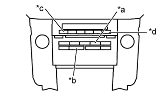
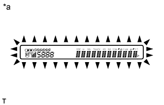
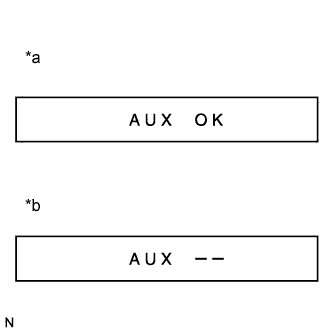
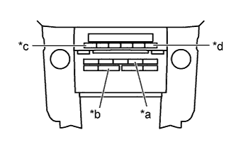

AUDIO AND VISUAL SYSTEM (w/o Multi-display) > DTC CHECK / CLEAR |
| STARTING DIAGNOSTIC MODE |
|  |
Turn the engine switch on (ACC).
| *a | AUX-USB |
| *b | Seek Track |
| *c | Channel 1 |
| *d | Channel 6 |
Turn off the audio system.
While pressing the preset switches "channel 1" and "channel 6" at the same time, press the "AUX" switch 3 times.
| ALL ELEMENT ILLUMINATION MODE AND SWITCH CHECK MODE |
|  |
Check that all elements are on.
| *a | Example |
When pressing each panel switch, check that a beep is emitted.
| STEREO JACK ADAPTER CONNECTION CHECK MODE |
|  |
Press the "SEEK TRACK UP" switch.
| *a | When a stereo jack adapter is connected |
| *b | When a stereo jack adapter is not connected |
Check if the stereo jack adapter is recognized.
| SERVICE CHECK MODE |
Press the "SEEK TRACK UP" switch.
| FINISHING DIAGNOSTIC MODE |
Press the "AUX" switch for 2 seconds or more, or turn the engine switch off.
| CHECK DTC |
Reference:
In the system check mode, the system check and the diagnostic memory check are performed, and the check results are displayed in ascending order of the component codes (physical address).
| Term | Meaning |
| Component code (Physical address) | Three-digit code (in hexadecimal) given to each device comprising AVC-LAN. Corresponding to its function, individual symbol is provided. |
| Logical address | Two-digit code (in hexadecimal) given to each function of each device comprising AVC-LAN. |
Service check result display
| Display | Original word | Meaning | Action to be Taken |
| good | Good (normal) | No DTCs are stored in both "System Check Mode" and "Diagnostic Memory Mode". | - |
| nCon | No connection | The system recognized the component when it was registered, but the component gives no response to "Diagnostic Mode ON Request". | Check the power source circuit and the communication circuit of the component indicated by the component code (physical address). |
| ECHn | Exchange | One or more DTCs for "Exchange" are detected in either "System Check Mode" or "Diagnostic Memory Mode". | Go to the detailed information mode to check the trouble area on the DTC chart. |
| CHEC | Check | When no DTCs are stored for "Exchange", one or more DTCs for "Check" are stored in either "System Check Mode" or "Diagnostic Memory Mode". | Go to the detailed information mode to check the trouble area on the DTC chart. |
| OLd | Old version | Old DTC application is identified and DTC is stored in either "System Check Mode" or "Diagnostic Memory Mode". | - |
| nrES | No response | The device gives no response to any one of "System Check Mode ON Request", "System Check Result Request", and "Diagnostic Memory Request". | Check the power source circuit and the communication circuit of the component indicated by the component code (physical address). |
Device name and physical address
| Physical Address No. | Name |
| 190 | Radio receiver assembly |
| 388 | Multi-media interface ECU |
| 440 | Stereo component amplifier assembly |
Service check mode
Press the "SEEK TRACK" switch to see the check result of each component.
The component code (physical address) is displayed first, and then the check result follows.
Detailed information mode 1
Press the preset switch "channel 2" to go to the "Detailed Information Mode 1".
Press the "SEEK TRACK" switch to display the physical address and DTC of the component.
Press the preset switch "channel 3" to go to the "Service Check Mode".
It is necessary to distinguish between the displays of the responses to "System Check Result Request" and "Diagnostic Memory Request". In order to distinguish between the information detected in "System Check Mode" and "Diagnostic Memory Mode" in "ECHn", "CHEC", and "OLd" in "Detailed Information Mode 1", refer to the following:
Detailed information mode 2
Press the preset switch "channel 2" to go to the "Detailed Information Mode 2".
Press the "SEEK TRACK" switch to display the physical address and DTC of the component.
Press the preset switch "channel 3" to go to the "Service Check Mode".
It is necessary to distinguish between the displays of the responses to "System Check Result Request" and "Diagnostic Memory Request". In order to distinguish between the information detected in "System Check Mode" and "Diagnostic Memory Mode" in "ECHn", "CHEC", and "OLd" in "Detailed Information Mode 2", refer to the following:
| DTC CLEAR/RECHECK |
|  |
Clearing All DTC Memory (when clearing all the memory of the DTCs previously detected)
| *a | AUX-USB |
| *b | Seek Track |
| *c | Channel 1 |
| *d | Channel 5 |
When the preset switch "channel 5" is pressed for 2 seconds or more during "Service Check Mode", the DTCs for all components are cleared ("CLr" is displayed at this time).
Clearing Individual DTC Memory (when clearing the memory of the DTC previously detected individually)
When the preset switch "channel 5" is pressed for 2 seconds or more during "Detailed Information Mode 1" or "Detailed Information Mode 2", the DTCs for the target component are cleared.
Press the preset switch "channel 1" to perform the service check again, and check that no DTCs are displayed for all the component codes (physical address).